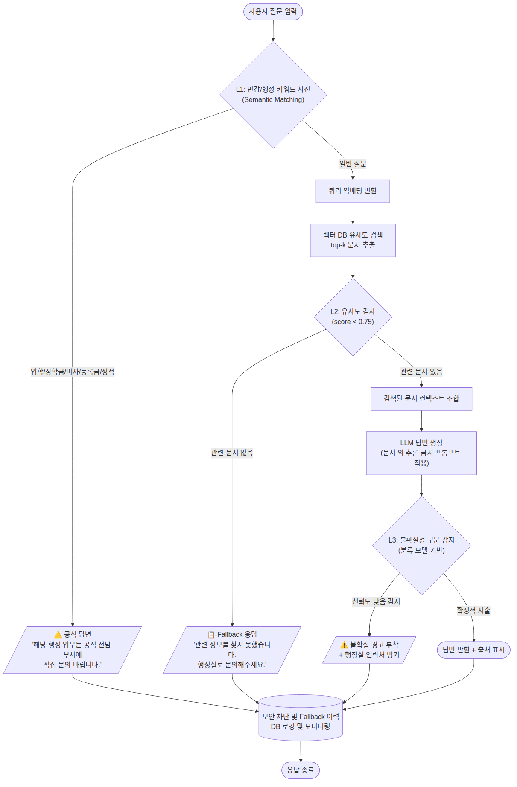
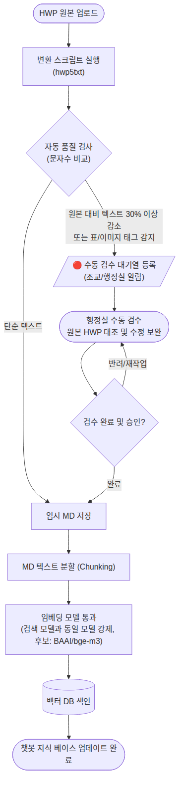
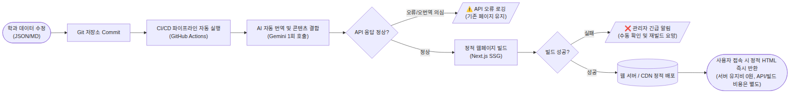

환각(Hallucination) 방지 및 비용 최적화를 위한 시스템 아키텍처
민감 키워드(입학/장학금/비자/등록금/성적) 차단, 유사도 미달 시 답변 거부, 불확실성 표현 필터링 등 3단계 방어망을 구축합니다. 모든 차단/응답은 로깅되어 운영 품질 개선에 활용됩니다.

HWP의 표/이미지 유실을 방지하기 위해 자동 품질 검사(원본 대비 텍스트 30% 이상 감소 시 경고)를 거친 후, 행정실이 원본 HWP를 대조하여 검수합니다. 검수 미완료 시 반려/재작업 루프를 통해 품질을 확보합니다.

실시간 API 호출을 피하기 위해, 데이터 변경 시에만 페이지를 재생성(SSG)합니다. 빌드 파이프라인과 API 호출 비용은 별도 발생하며, 번역 오류 발생 시 기존 페이지를 유지하는 안전장치를 포함합니다.
